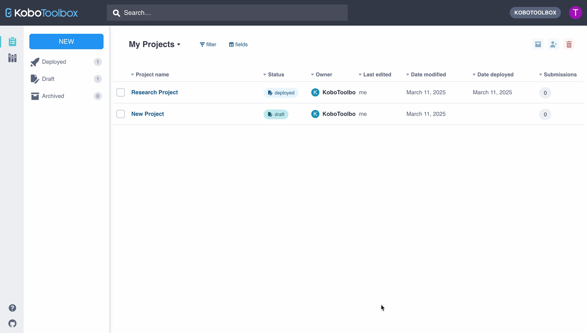
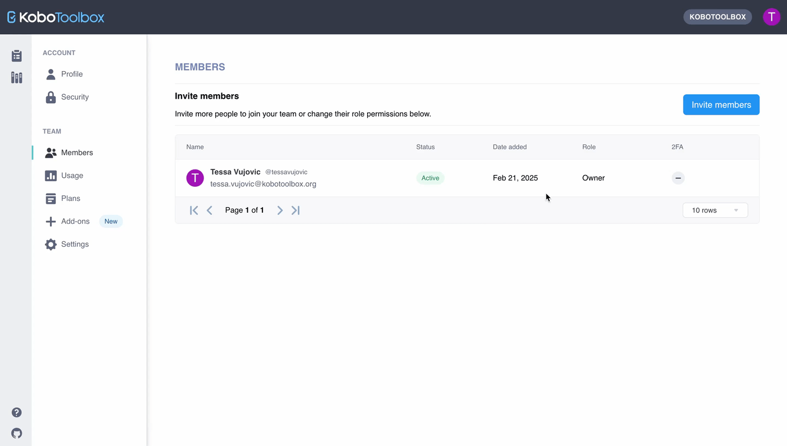
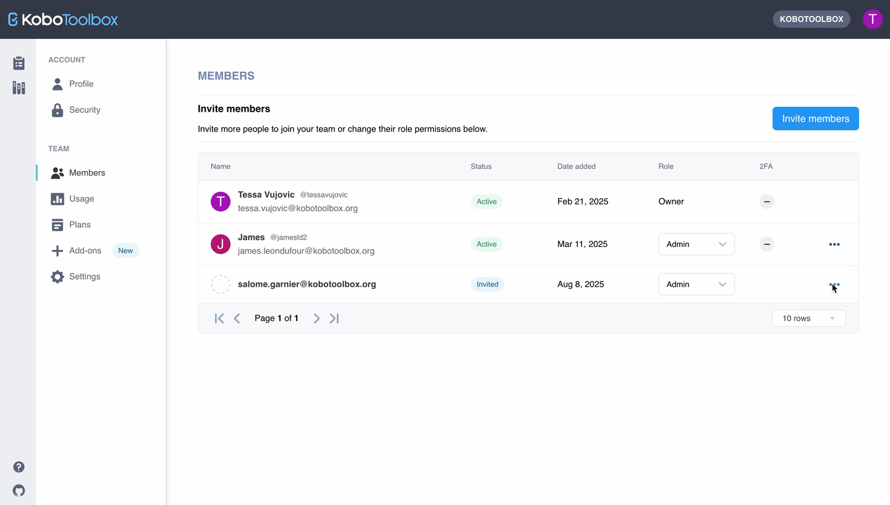
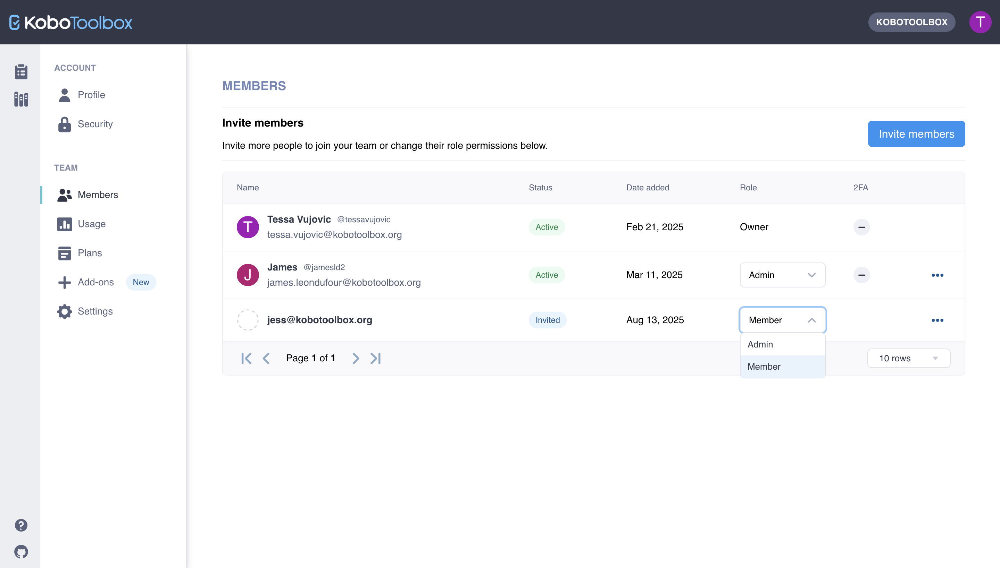
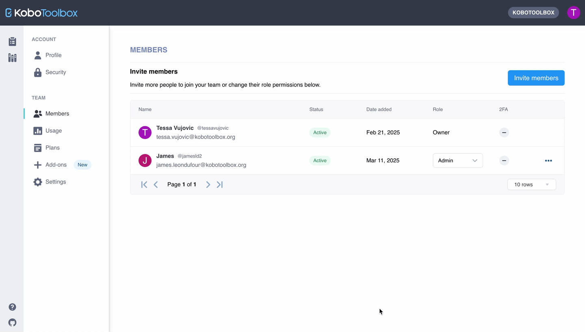

Search the knowledge base, browse our resources, and visit our forum for more detailed information
Read in English | Leer en español | اقرأ باللغة العربية Dernière mise à jour : 3 oct. 2025
La nouvelle fonctionnalité de gestion d’équipe vous permet de centraliser la gestion des projets et des utilisatrices et utilisateurs pour une meilleure supervision et collaboration au sein de grandes équipes distribuées. Lorsque vous ajoutez des utilisatrices et utilisateurs à votre équipe dans KoboToolbox, vous aurez accès à la visualisation et à la gestion de leurs projets. Les utilisatrices et utilisateurs de votre équipe auront accès aux quotas d’utilisation de votre plan Teams ou Enterprise, et la propriété de leurs projets sera transférée à votre équipe.
Cet article comprend :
Propriété des projets, rôles et vues de projets pour les équipes
Comment inviter des utilisatrices et utilisateurs à rejoindre votre équipe et attribuer des rôles
Comment retirer des utilisatrices et utilisateurs de votre équipe
Remarque : Cette fonctionnalité n'est actuellement disponible que pour les utilisatrices et utilisateurs disposant des plans Teams et Enterprise.
Un aspect clé de la fonctionnalité de gestion d’équipe est que la propriété des projets est centralisée au sein de votre équipe.
Tout nouveau projet créé par une utilisatrice ou un utilisateur de votre équipe appartient automatiquement à votre équipe.
Lorsqu’une utilisatrice ou un utilisateur rejoint une équipe dans KoboToolbox, tous les projets dont elle ou il est propriétaire seront transférés à l’équipe.
En centralisant la propriété des projets, la fonctionnalité de gestion d’équipe vous offre une meilleure supervision et une gestion d’équipe plus efficace.
Remarque : Cette fonctionnalité affecte uniquement la propriété des projets. Elle n'affecte pas les autorisations de partage de projets. Les autorisations de partage précédemment configurées ne seront pas affectées lorsque la propriété d'un projet sera transférée à une équipe. Si vous disposez d'autorisations de gestion pour un projet, vous continuerez à disposer de ces autorisations et pourrez partager le projet comme d'habitude. Pour plus d'informations, consultez Partager des projets avec des autorisations au niveau utilisateur.
Il existe trois rôles différents pour les membres d’une équipe, chacun avec des fonctions et des capacités spécifiques.
Propriétaire : Le ou la Propriétaire peut visualiser et gérer tous les projets et utilisatrices et utilisateurs de l’équipe ainsi que le plan et les paramètres. Chaque équipe dans KoboToolbox ne peut avoir qu’un seul ou une seule Propriétaire.
Vues et gestion des projets : Le ou la Propriétaire peut visualiser tous les projets de l’équipe et dispose de toutes les autorisations de gestion de projets.
Transferts de propriété de projets : Le ou la Propriétaire peut transférer la propriété de n’importe quel projet de l’équipe à une utilisatrice ou un utilisateur extérieur à l’équipe.
Gestion des utilisatrices et utilisateurs : Le ou la Propriétaire peut ajouter ou retirer des membres de l’équipe et attribuer différents rôles.
Gestion du plan et de l’utilisation : Le ou la Propriétaire peut gérer le plan et les paramètres de l’équipe et consulter la page Utilisation.
Administratrices et administrateurs : Les Administratrices et administrateurs peuvent visualiser et gérer tous les projets et utilisatrices et utilisateurs de l’équipe ainsi que les paramètres. Chaque équipe peut avoir un nombre illimité d’Administratrices et administrateurs.
Vues et gestion des projets : Les Administratrices et administrateurs peuvent visualiser tous les projets de l’équipe et disposent de toutes les autorisations de gestion de projets.
Gestion des utilisatrices et utilisateurs : Les Administratrices et administrateurs peuvent ajouter ou retirer des membres de l’équipe et attribuer différents rôles.
Gestion du plan et de l’utilisation : Les Administratrices et administrateurs peuvent gérer les paramètres de l’équipe et consulter la page Utilisation.
Membres : Les Membres de l’équipe continuent d’avoir un accès complet à leur compte KoboToolbox avec l’avantage des quotas d’utilisation de leur équipe. Les Membres peuvent créer de nouveaux projets et utiliser toutes les fonctionnalités de KoboToolbox comme auparavant. Les équipes peuvent avoir un nombre illimité de Membres.
Remarque : Les utilisatrices et utilisateurs ne peuvent appartenir qu'à une seule équipe à la fois.
Le ou la Propriétaire de l’équipe et les Administratrices et administrateurs ont accès à la vue Projets de l’équipe et à leur propre vue personnelle Mes projets.
Par défaut, votre vue Mes projets sera affichée. Si vous activez le menu déroulant de vue de projets, vous pouvez basculer vers votre vue Projets de l’équipe.
La vue Projets de l’équipe comprend tous les projets de toutes les utilisatrices et tous les utilisateurs de l’équipe.
Les Membres de l’équipe n’ont accès qu’à leur vue personnelle Mes projets, qui comprend les projets qu’ils ont créés et les projets partagés avec eux. Ils n’ont pas accès à la vue Projets de l’équipe.

Le ou la Propriétaire de l’équipe et les Administratrices et administrateurs peuvent inviter des utilisatrices et utilisateurs à rejoindre l’équipe, leur donnant accès aux quotas d’utilisation de l’équipe et centralisant la gestion des projets.
Pour inviter des utilisatrices et utilisateurs à rejoindre votre équipe dans KoboToolbox :
Accédez à vos Paramètres du compte.
Naviguez vers la page Membres sous ÉQUIPE.
Cliquez sur le bouton Inviter des membres.
Saisissez le nom d’utilisateur ou l’adresse e-mail de la personne que vous souhaitez inviter à rejoindre votre équipe et attribuez-lui un Rôle. Cliquez sur Envoyer l’invitation.
Les invitations ne sont pas limitées aux utilisatrices et utilisateurs disposant du domaine de messagerie de votre organisation. Vous pouvez inviter des utilisatrices et utilisateurs avec n’importe quelle adresse e-mail valide.
L’utilisatrice ou l’utilisateur recevra une invitation par e-mail pour rejoindre votre équipe. Si elle ou il n’a pas encore de compte KoboToolbox, elle ou il sera invité(e) à en créer un.
Lorsqu’elle ou il acceptera l’invitation, elle ou il aura accès à votre équipe en fonction du rôle qui lui a été attribué. Tous les projets dont l’utilisatrice ou l’utilisateur était auparavant propriétaire seront transférés à votre équipe.

Une invitation à rejoindre une équipe expirera 14 jours après son envoi. Vous pouvez renvoyer l’invitation directement dans le menu Plus d’actions de la vue Membres. Vous pouvez également annuler une invitation en utilisant l’option Supprimer l’invitation dans le menu Plus d’actions.

Remarque : Si vous avez des projets existants dont vous ne souhaitez pas transférer la propriété à votre équipe, nous vous recommandons de créer un compte séparé et de transférer la propriété de ces projets vers le nouveau compte avant d'accepter l'invitation à rejoindre l'équipe.
Le ou la Propriétaire de l’équipe et les Administratrices et administrateurs peuvent attribuer et modifier les rôles des utilisatrices et utilisateurs de leur équipe dans la vue Membres.
Lorsque vous changez le rôle d’un Membre en Administratrice ou administrateur, vous lui accordez l’accès à la vue Projets de l’équipe ainsi que les autorisations de gestion de projets et de rôles. Vous lui accordez également l’accès à la gestion des paramètres et à la consultation de la page Utilisation.

Le ou la Propriétaire de l’équipe et les Administratrices et administrateurs peuvent retirer des utilisatrices et utilisateurs de l’équipe. Lorsqu’une utilisatrice ou un utilisateur est retiré(e) de votre équipe, elle ou il n’aura plus accès aux projets appartenant à l’équipe ni aux quotas d’utilisation de l’équipe.
Pour retirer une utilisatrice ou un utilisateur de votre équipe :
Accédez à vos Paramètres du compte.
Naviguez vers la page Membres sous ÉQUIPE.
Cliquez sur l’icône Plus d’actions pour l’utilisatrice ou l’utilisateur que vous souhaitez retirer.
Sélectionnez Retirer.
Confirmez et finalisez l’action en cliquant sur Retirer le membre.

Chaque équipe dans KoboToolbox ne peut avoir qu’un seul ou une seule Propriétaire. Le ou la Propriétaire a été précédemment déterminé(e) par votre organisation lors de la souscription à votre plan.
Pour transférer la propriété de votre équipe à une autre utilisatrice ou un autre utilisateur, veuillez contacter notre équipe d’assistance.
Did you find what you were looking for? Was the information clear? Was anything missing?
Share your feedback to help us improve this article!
KoboToolbox is maintained by Kobo Inc.